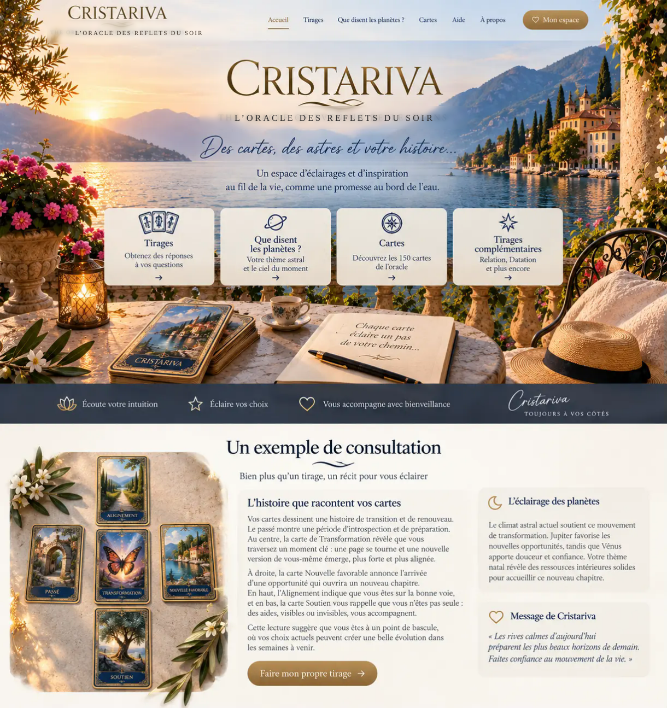

![An Italian lakeshore at sunset]()
CRISTARIVA
L’Oracle des Reflets du Soir
Des cartes, des astres et votre histoire…
Un chemin d’éclairages et d’inspiration, au fil de la vie, comme une promesse au bord de l’eau.
Votre consultation Cristariva
Posez votre question, choisissez votre tirage et découvrez l'histoire racontée par vos cartes.
95cartes principales
20cartes relation
15cartes datation
Une lecture en plusieurs reflets
Le parcours est volontairement séquentiel : question, choix du tirage, tirage, première interprétation, approfondissements optionnels, puis synthèse finale. Les cartes de relation et de datation ne remplacent pas le tirage symbolique : elles le précisent.
1 · Votre question2 · Choix du tirage3 · Tirage4 · Interprétation5 · Approfondissements6 · Synthèse
Votre espace de tirage
Format du tirage
Une carteUn éclairage essentiel
Trois cartesAvant · Maintenant · Élan
CroixUne lecture en cinq angles
Explorer les 130 cartes
Retrouvez les illustrations, les définitions et les significations de votre oracle.